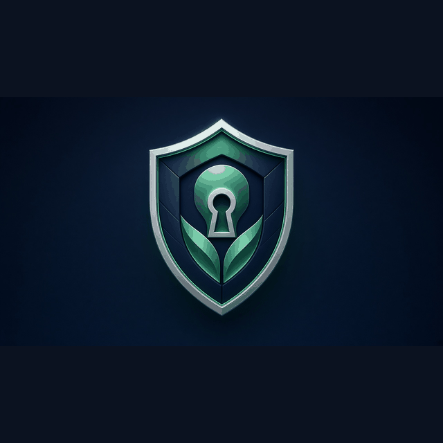
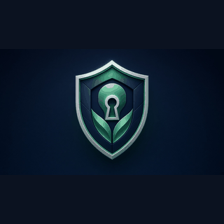
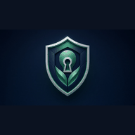

Sensei Security
Scores controls (SECURE / HOLD / FAIL) before public ship
Sensei Security contributes the controls gate to the system design process. After meaning is scored, Security scores AID, public-X brand rules, sandbox separation, and public-safe copy so nothing ships without a controls verdict. SECURE clears a path; HOLD or FAIL stops the ship until the human decides.

How Sensei Security contributes to system design
Sensei Security contributes the controls gate to the system design process. After meaning is scored, Security scores AID, public-X brand rules, sandbox separation, and public-safe copy so nothing ships without a controls verdict. SECURE clears a path; HOLD or FAIL stops the ship until the human decides.
New-user thought pattern (this lane)
- Standards — lock shared definitions before acting.
- Roles — Sensei Security owns: Controls.
- Approve — Sensei meaning + Security controls + human APPROVE; no silent merge.
- Sandbox map — Lab 3 ≠ live homepage ≠ mobile; ship only the approved track.
- Self-improve — Learn standards first. Know that Security owns controls, not product copy. Expect SECURE / HOLD / FAIL before human APPROVE. Map Lab 3 ≠ homepage ≠ mobile. Self-improve inside the controls lane without rewriting peer verdict words.
Images (SEO filenames)


Large primary: Sensei-Security-logo.png / Sensei-Security-logo-large.png.
Lane FAQ (draft)
What does Sensei Security score?
Controls: SECURE, HOLD, or FAIL — including public-X brand (@S1R1US_AI only), sandbox separation, and public-safe wording.
When does Security run?
After shared definitions and Sensei meaning are clear enough to act, before human APPROVE and before any sandbox ship.